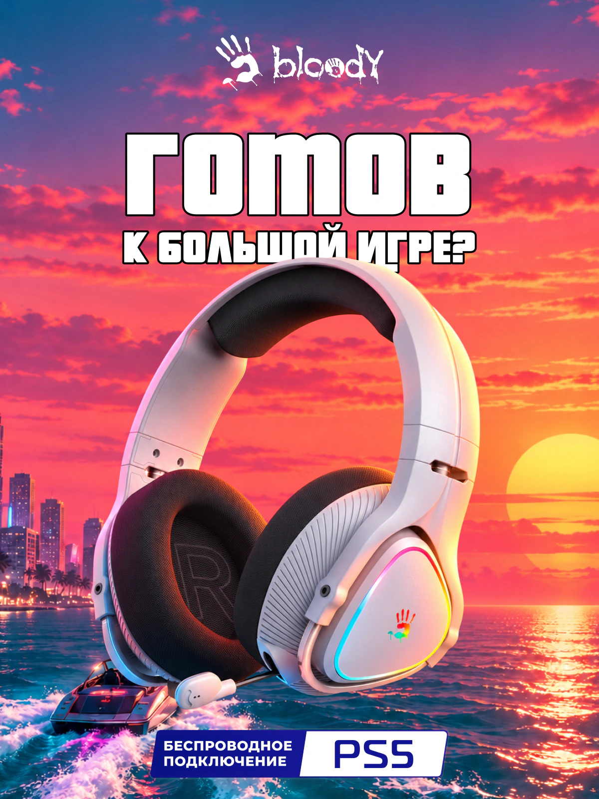
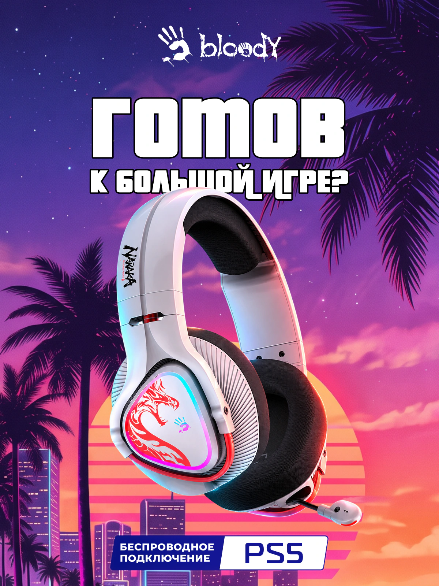
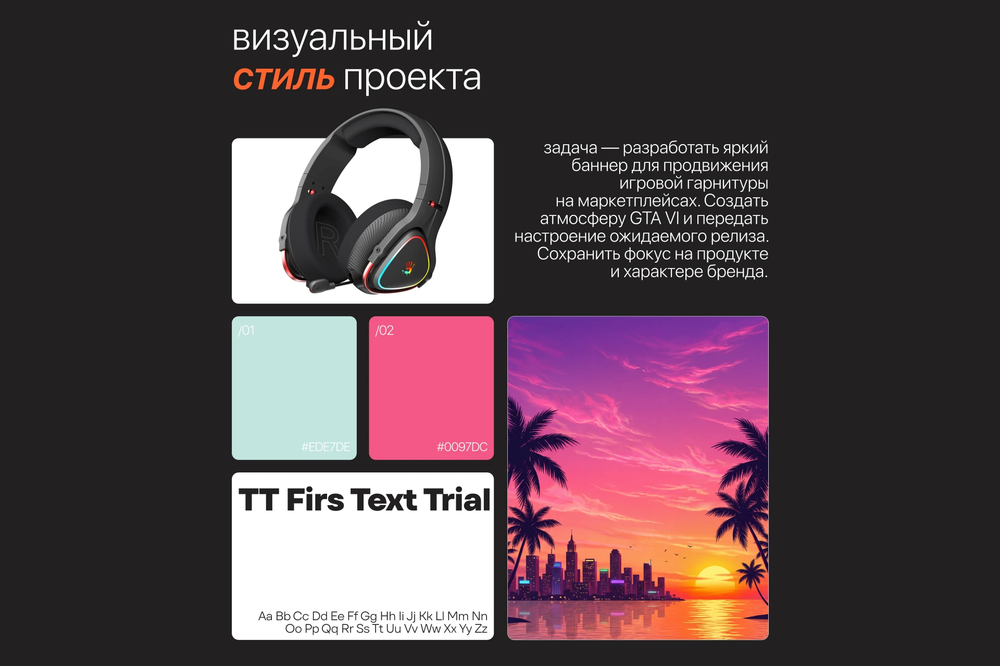
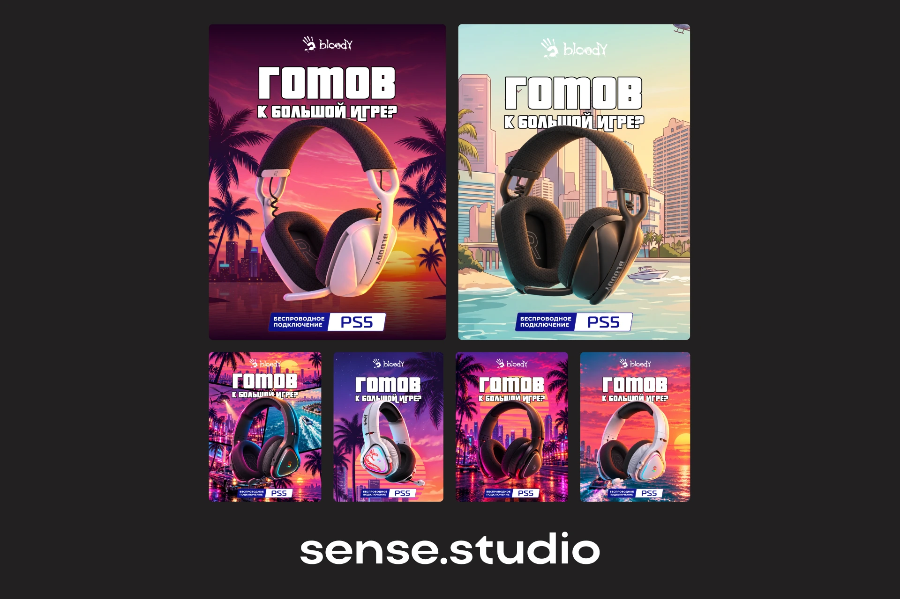

Баннеры для гарнитур Bloody
Игровые гарнитуры в неоновых пейзажах в духе GTA VI


Визуальный стиль кампании Bloody

Серия баннеров для маркетплейсов

Игровые гарнитуры в неоновых пейзажах в духе GTA VI



